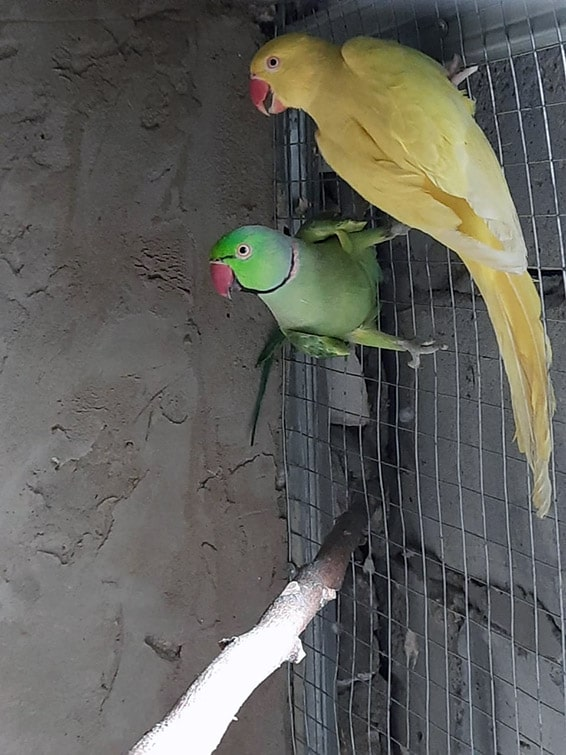

Китайский
Полное название вида – китайские кольчатый попугай (латинское Psittacula derbiana).
Это крупная птица – длина тела до 50 см, хотя больше половины длины приходится на хвост.
Средний вес около 320 грамм. Окрас перьев по большой части зеленый, часть бедер,
крыльев и живота серо-голубого цвета, голова голубовато-пурпурного оттенка.
На лице черные полоски чуть ниже щек и от надклювья до глаз.
Половой диморфизм выражен в окрасе клюва. У самцов верхняя часть клюва красного цвета,
у самок – весь клюв черный. Также окрас самок чуть бледнее.
У птенцов – голова зеленого цвета, клюв – розоватый.
Александрийский
Эти попугаи постепенно перестают быть эксклюзивной принадлежностью коллекционеров,
и в настоящее время разводятся как домашние питомцы и выкармливаются вручную.
Многие любители птиц открыли для себя этих попугаев как уравновешенных,
наделённых способностью к разговору и замечательных домашних питомцев для всей семьи.
Большинство владельцев в восторге от индивидуальных особенностей характера этих птиц.
Александрийцы не так агрессивны, как ожереловые попугаи. В действительности,
они гораздо более послушные и с самцами проще справляться.
Самки могут стать кусачими в период размножения,
однако, если вы правильно обращаетесь с птицей, проблем обычно не возникает.
В отношении любого азиатского попугая, главное – это игнорирование нежелательного поведения.
Ваш голос должен быть использован только для того,
чтобы хвалить и поощрять птицу за правильное поведение.
В случае, если птица испытывает вас на «прочность», игнорируйте её и идите заниматься обычными делами.
Ожереловый
Ожереловый попугай как домашний питомец отличается живым и весёлым нравом,
он хорошо уживается с людьми. Это хороший «говорун», способный запоминать
и имитировать значительное число слов и звуков, и, хотя указывается, что
он в этом отношении уступает многим другим попугаям, по некоторым данным
способен запомнить до 250 слов. При этом считается, что самцы способны
запоминать больше слов, чем самки. В неволе эта птица может прожить до 25 лет
(утверждается также, что они могут доживать до 40 и даже 50 лет).
Для полноценного содержания необходима достаточно просторная клетка,
желательно даже вольер, обеспечивающий возможность интенсивного передвижения.
Также рекомендуется обеспечивать доступ попугая к различным предметам для игры.
При соблюдении определённых условий содержание ожерелового попугая
несложно и может быть рекомендовано даже начинающим любителям

Розовогрудый
Во всем мире наблюдается рост популярности этого вида для домашнего содержания.
Если Вы стали владельцем такого пернатого питомца, то первым делом Вам
понадобиться обратиться в специализированный зоомагазин для попугаев,
чтобы выбрать побольше игрушек. Это связано с тем, что это высокоинтеллектуальная
и игривая птица и Вам потребуется обеспечить ее достаточным количеством развлечений,
чтобы она не скучала. При недостаточном количестве игрушек и развлечений
питомец будет скучать, что спровоцирует поведенческие проблемы. Если пернатый
не обучен и не воспитан, то в характере может проявляться властность и агрессия.
Вместе с тем существует мнение, что допустимо купить такого пернатого, даже
если у Вас не было опыта общения с птицами, т.к. воспитать его проще,
чем какаду, жако, ара, которых рекомендуют покупать только тем людям,
у которых уже имеются навыки общения с пернатыми. Кольчатый розовогрудый
попугай способен обучиться человеческой речи, однако в большинстве случае
речь не такая четкая и ясная, как у крупных видов.
Сливоголовый
Кроме названия сливоголовый попугай, этот вид иногда также называют
красноголовый попугай. Латинское название – Psittacula cyanocephala.
Размеры – 33-35 см, из которых две три приходится на хвост.
Основной окрас тела – зеленый. Пол птицы можно отличить по цвету головы и клюва.
У самцов голова красная-синяя с черным ожерельем на шее, верхняя
часть клюва – оранжево-желтая, нижняя – темного цвета. У самок перышки на голове
серого цвета, ожерелье отсутствует, обе части клюва желто-кукурузного цвета.
У птенцов голова зеленого цвета, обе части клюва желтоватого оттенка.
Продолжительность жизни сливоголового попугая.
Какарики
Какарики практически целый день активны и требуют много места для деятельности.
Клетка для этих птиц должна быть большой. Попугай должен иметь возможность
побегать по дну, пролететь хотя бы немного между жердочками, а также побегать по
прутьям клетки (какарики, в отличие от других видов попугаев, не лазают по прутьям,
а скорее бегают по ним с большой скоростью, не пользуясь при этом клювом). Лучше всего
для них подойдет комнатный вольер. Какарики большую часть дня должны проводить в свободном
полете, то есть в комнате. Им нужно предоставить как можно больше пространства
(даже небольшая комната будет для них слишком маленькой).
Жако
Длина птицы достигает 30—35 см, размах крыльев 65, длина крыла 22, а хвоста 8 см.
У жако чёрный загнутый клюв, радужка глаза зрелой птицы жёлтого цвета, ноги свинцово-серые.
Ноздри, восковица, уздечка и ободок вокруг глаза покрыты кожей. У длинных крыльев жако
хорошо развиты крыльевые концы, хвост средней длины, ровной срезанной формы. В оперении
жако два основных цвета — перья на туловище и голове пепельно-серого цвета с несколько
более светлыми краями, перья хвоста — пурпурно-красные. Максимальная зафиксированная
продолжительность жизни жако — 49,7 года
Конголезский
Попугай Розелла отличается средними размерами, а общая длина тела варьируется в пределах 25-35 см.
Для всех видов характерным является наличие достаточно широкого хвоста с очень своеобразной
ступенчатой формой и одинаковыми четырьмя центральными перьями.
Размеры боковых перьев, по убывающей, изменяются с двух сторон от центральной части. На поверхности
надклювья, недалеко от кончика, присутствует своеобразная выемка. В области щек присутствует
крупное пятно, которое может иметь синее, жёлтое или молочно-белое яркое окрашивание.